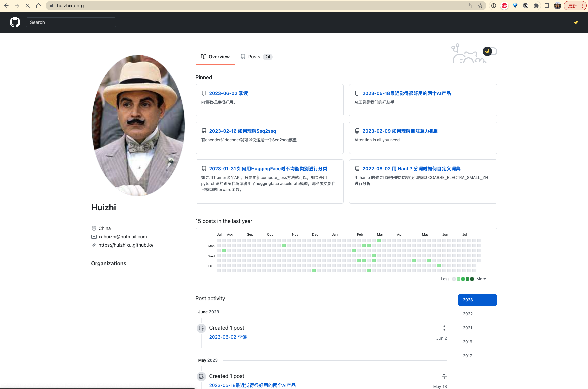
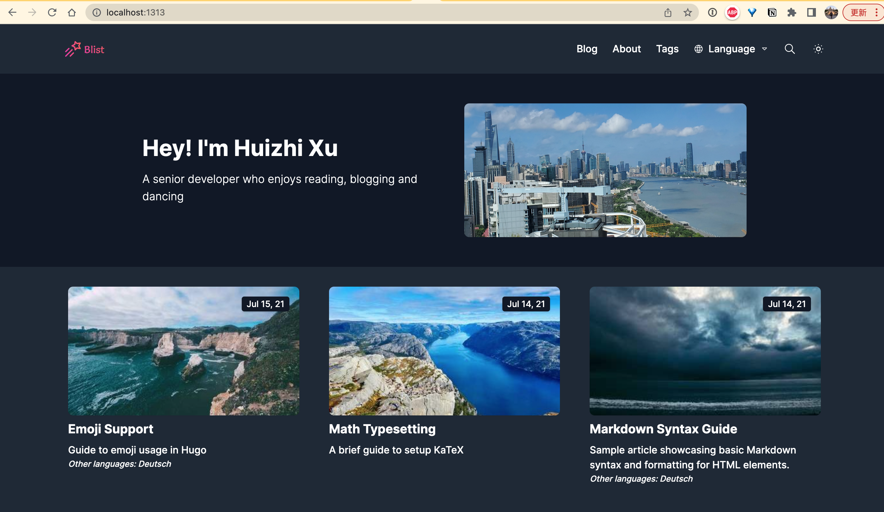

2023-07-31 更换博客皮肤
目录
哈哈哈，我发现我文章没写多少，时间都花在创建/修改/更换博客、博客域名、托管服务器和博客主题上。但不得不说，这个过程真的很有意思啊。
之前博客主题用的是github-styles，它的页面和github一模一样。左边是个人头像和个人信息，右边上面是置顶文章，然后是文章提交热力图，再往下就是文章的时间线，一目了然。它还能切换light/dark模式.
一切都挺好的，但是最近觉得有点不太方便了，因为我想将文章归类存储和搜索，将生活的感想和技术上的总结分开，此外还想加一个英文和德语的界面。
但是还是打算用Hugo，hugo真的是很方便啊，之前不太懂的我也跟着教程做出来了。于是打开Hugo的主题页面开始浏览，看了几个，最后决定用这个叫做blist主题的，它支持multi-lingual，页面也很漂亮。
将主题 git clone到现在的博客之后，按照步骤开始操作，但是没有生效。别着急，一般都不会一次性生效的。
我又重新安装操作了好几遍，并且大胆地删了一些上个主题的遗留的文件夹，但是怎么改动博客都运行不起来了。
于是去github看了一下。发现有两个repo都是和博客相关的。事实上距离上一次折腾博客已经有了一年多了，我早已经忘记为什么要分两个repo了。而且我设置了一个自动化提交，只要运行一个bash文件就可以写文章。
于是我又重新开始看教程，敲敲打打，修修补补。
在这个过程中看到有人吐槽hugo的文档写的不清晰，能够感受到他的愤怒了，哈哈。
Why Hugo’s Documentation Sucks
除了看Hugo的文档之外，Hugo论坛hugo discourse 也是很有帮助的。
我最后遇到的问题是，博客在本地启动，页面显示一切正常。但是在域名启动，页面显示就很奇怪，我不懂前端，猜测是部分css文件没有生效。找了很多答案，都没有改变。最后在这个论坛上提问，很快就有人回答了。太感谢了！
互联网世界的美妙就在于这吧。有超级多的资料可以学习，有前辈程序员写的教程，有各种论坛答疑讨论，有开源仓库的无私奉献。享受这些美好，同时也要不断地帮助别人。
放一个修改前后的对比图：

